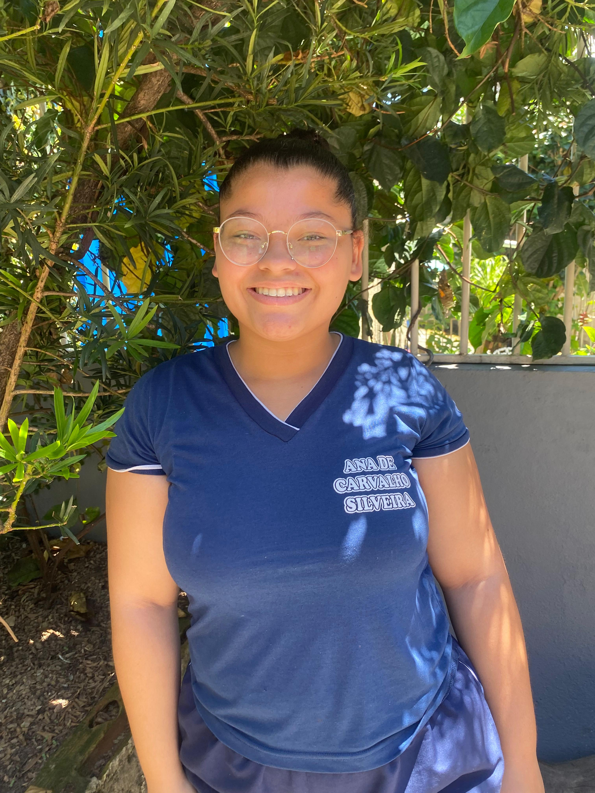

título

Descrição do portifolio: No curso, Yasmin Vitória aprendeu um pouco de tudo e principalmente HTML/CSS, sua maior dificuldade é arduino e sua facilidade HTML/CSS, o que ela mais gosta é também HTML/CSS, o curso influência na sua vida pois irar usar em sua área de trabalho, ela não pretende seguir a àrea, seu melhor momento foi consiguir apresentar e responder as perguntas feitas pelo professor, o que ela mais se orgulha de ter aprendido foi fazer seu proprio site em HTML/CSS, pra ela o mais importante é entender o impacto que tem na sociedade, ela diz que ja teve medo de não consiguir acompanhar o rítimo da turma, um conselho dela para os demais é não desistir que tudo valerá apena! o curso influenciou na sua forma de apresentar em meio ao público.
Descrição do portifolio